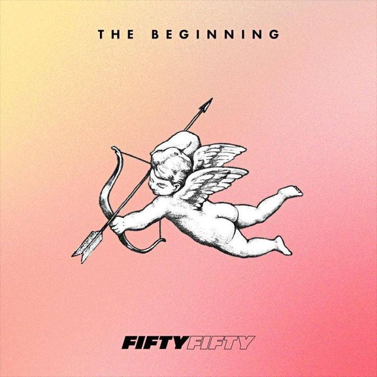
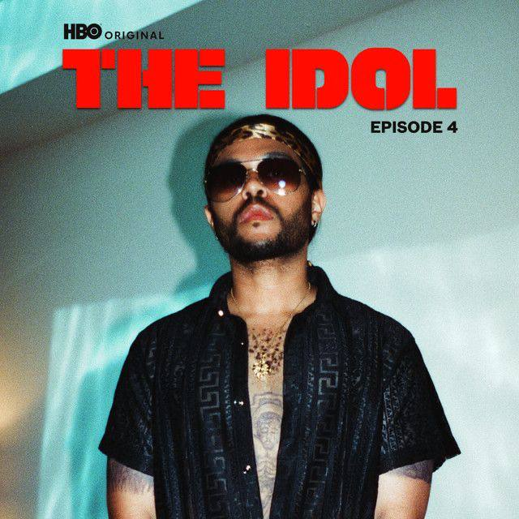

All We Want Is Text Lyrics

Cupid
On “Cupid (Twin Version),” FIFTY FIFTY find themselves in a love situation as they think Cupid and the whole thing about love is nothing but a dumb lie, and yet they still wish for love in their life. The song gives the listener the perfect Valentine's feel with a taste of light dance-pop. Lyric

One Of The Girls”
“One of the Girls” is a collaboration between BLACKPINK's JENNIE, Lily-Rose Depp and The Weeknd for the HBO show The Idol, featured on episode 4 “Stars Belong to the World.” Lyric